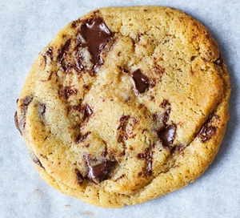

Home
Chocolate Chip Cookies

Description
This simple recipe will allow you to create warn gooey Chocolate Chip cookies with little to no hassle. Follow the few easy steps below and they will end up perfect. The amounts provided here should ideally create 24 cookies, of course you can make this less or more depending what size you would like them to be in the end. With this lets get started.
Ingredients
- 1 Cup of butter, softened
- 1 Cup White Sugar
- 1 Cup packed brown sugar
- 2 Eggs
- 2 Teaspoons vanilla extract
- 1 Teaspoon taking soda
- 2 Teaspoons hot water
- 1/2 Teaspoon salt
- 3 Cups All purpose flower
- 2 Cups semisweet chocolate chips
- 1 Cup chopped walnuts
Steps
- Preheat oven to 350 degrees F (or 175 degrees C)
- Cream together the butter, white sugar and brown sugar until smooth. Beat in the eggs one at a time, then stir in vanilla extract. Dissolve baking soda in hot water. Add to batter along with salt. Stir in flower, chocolate chips, and nuts. Drop by large spoonfuls onto greased pans
- Bake for 10 minutes in the preheated oven, or until edges are nicely browned